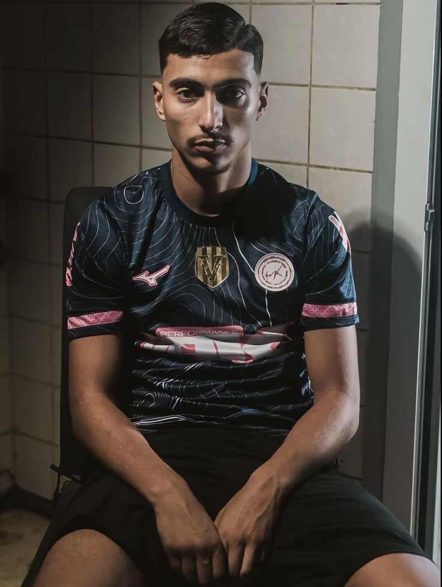

Saïf est un rappeur originaire de Cavaillon dans le Vaucluse (84). Il commence à se faire connaître à partir de 2023 grâce à des freestyles sombres, mélancoliques et très personnels. Son univers mélange une écriture travaillée, des émotions fortes et une ambiance froide inspirée du rap underground. À travers ses morceaux, il parle souvent de solitude, de douleur, de la rue et des difficultés de la vie quotidienne. Ses collaborations avec Pato ont aussi permis de faire grandir leur collectif 84 City dans le sud de la France.